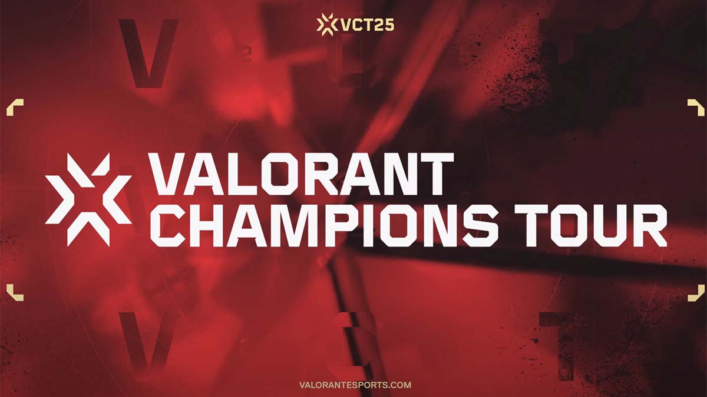
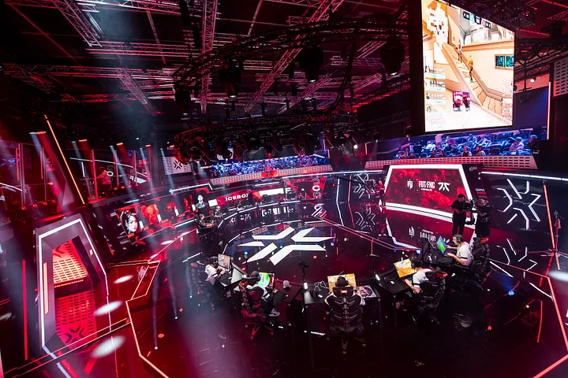

Valorant Champions officially kicked off in 2021 as the final and biggest event of Riot Games’ Valorant esports ecosystem. It’s the culmination of the year-long Valorant Champions Tour (VCT), which started earlier in 2021. The tournament has grown quickly, attracting millions of viewers worldwide and solidifying Valorant’s place in the competitive scene. In its first year, Valorant Champions had 16 of the best teams globally battling it out in Berlin. By 2022 and 2023, it expanded its reach and prestige, featuring more structured regional leagues and a more refined qualification process through the VCT. Riot Games continuously tweaks the system to balance competitiveness and global representation.
Riot Games, the same company behind League of Legends esports, is the sole organizer and governing body of Valorant Champions and the entire VCT structure.
The tournament only features Valorant, a tactical FPS game developed by Riot Games, known for combining precise gunplay with unique agent abilities.
The Valorant Champions Tour (VCT) features 16 elite teams that secure their spots through regional leagues, international tournaments, and a last-chance qualifier. The tour unfolds in structured phases: Kickoff, Masters, Champions, and the Last Chance Qualifier. Teams earn their way to global stages based on performance in the Americas, EMEA, Pacific, and China's own league.
VCT matches typically follow a format of group stages and double-elimination playoffs, with most matches being best-of-three and Grand Finals as best-of-five. Events take place globally, blending online play with high-profile LAN events—particularly during Masters and Champions. Through VCT, Riot Games showcases its dedication to establishing Valorant as a leading title in the world of esports.
The prize pool for Valorant Champions has seen steady growth over the years. In 2022, it stood at around $1,000,000 USD, while in 2023, the prize pool grew slightly, reaching over $1.5 million, partly due to revenue generated from in-game items, such as exclusive Champions skins. The prize distribution for the tournament typically allocates the largest share to the first-place team, often between $300,000 and $400,000. The second-place team receives approximately $150,000 to $200,000. The remaining funds are distributed among the other teams based on their final placements, with even teams eliminated early receiving a portion. In addition to the prize money, teams also benefit from revenue generated through the sale of special Champions skins, providing a unique way for the community to support their favorite esports teams.
Valorant Champions offers expansive live coverage, connecting fans worldwide to every moment of the competition. Matches are streamed across multiple major platforms, ensuring accessibility and convenience for viewers no matter their region. With multilingual support and broad platform availability, Valorant Champions ensures that fans can enjoy the action live and in their preferred language. Here’s how to tune in and what to expect.
The production value of the VCT is a highlight, with a strong emphasis on cinematic presentations. The tournament features cutting-edge stage designs, dramatic lighting, and intricate visual effects that elevate the viewing experience. Storytelling elements, such as in-depth player interviews and team narratives, are woven throughout the broadcast, providing fans with a deep connection to the competition, making it an event not just for esports enthusiasts but for general audiences as well.
The Valorant Champions Tour has taken place in several key global cities, chosen for their esports infrastructure and international accessibility. Past events have been held in locations like Berlin, Germany, Reykjavik, Iceland, and Los Angeles, USA, with each venue contributing to the excitement and global reach of the tournament. These locations offer the ideal backdrop for the high-energy atmosphere of VCT, drawing fans and viewers from around the world, and enhancing the event's status as a premier esports spectacle.
